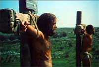

|
|
我们一同打开圣经，哥林多前书第一章，先从十八节开始读，一直读到结束，以后第二章第一节到第五节，我自己读。
哥林多前书一章十八至三十一节：「因为十字架的道理，在那灭亡的人为愚拙；在我们得救的人却为上帝的大能。就如圣经上所记：「我要灭绝智能人的智能，废弃聪明人的聪明。」
|
你们的声音在哪里？你还找不到哥林多前书在哪里吗？哥林多前书在创世记的前面。很多人找任何一卷圣经都从那边找，因为那边有目录。哥林多前书第一章从头，十八节我念，十九节你们念。
「因为十字架的道理，在那灭亡的人为愚拙；在我们得救的人却为上帝的大能。就如圣经上所记：「我要灭绝智能人的智能，废弃聪明人的聪明。」智能人在那里？文士在那里？这世上的辩士在那里？上帝岂不是叫这世上的智能变成愚拙么？世人凭自己的智能，既不认识上帝，上帝就乐意用人所当作愚拙的道理，拯救那些信的人；这就是上帝的智能了。犹太人是要神迹，希利尼人是求智能；我们却是传钉十字架的基督，在犹太人为绊脚石，在外邦人为愚拙；但在那蒙召的，无论是犹太人，希利尼人，基督总为上帝的能力，上帝的智能。因上帝的愚拙总比人智能；上帝的软弱总比人强壮。弟兄们哪！可见你们蒙召的，按着肉体有智能的不多，有能力的不多，有尊贵的也不多；上帝却拣选了世上愚昧拙的，叫有智能的羞愧；又拣选了世上软弱的，叫那强壮的羞愧；上帝也拣选了世上卑贱的、被人厌恶的，以及那无有的，为要废掉那有的；使一切有血气的，在上帝面前一个也不能自夸。但你们得在基督耶稣里，是本乎上帝，上帝又使他成为我们的智能、公义、圣洁、救赎；如经上所记：「夸口的当指着主夸口。」
哥林多前书二章一至五节：「弟兄们！从前我到你们那里去，并没有用高言大智对你们宣传上帝的奥秘。因为我曾定了主意，在你们中间不知道别的，只知道耶稣基督，并且他钉十字架。我在你们那里，又软弱，又惧怕，又甚战兢。我说的话讲的道，不是用智能委婉的言语，乃是用圣灵和大能的明证；叫你们的信不在乎人的智能，只在乎上帝的大能。」
「上帝的大能！」这福音是上帝的大能，要救一切相信的人（罗马书：1 章 16 节）。上帝的大能，在k的软弱里面显明出来。上帝的大能，是十字架，耶稣为我们死所成就的大能。因为为我曾定了主意，在你们中间不知道别的，只知道耶稣基督，并且他钉十字架。犹太人是要神迹，希利尼人是求智能，我们却是传钉十字架的基督；在犹太人为绊脚石，在外邦人为愚拙。」
我们圣经就读到这个地方，不要再有声音了，我们低头祷告：「主啊，我们已经打开你的话语，求主现在打开我们的心；主啊，求主捆绑你要捆绑的，释放你要释放的，在我们一切错误的观念，可以因为得着释放进入自由，在你生命的奥秘，在你测不透丰盛里面我们享受因真理而得的自由，愿你的灵做成这事，因为你的灵在哪里，哪里就有自由。主啊，你听我们的祷告，我们把你无用的仆人带到你面前，愿主你借着他把你的真理传讲清楚，你赐给我们受教者的舌头，受教者的耳朵，使我们传讲你的话，我们听你的言语，我们都如同学生在你的面前领受你的训诲，听我们的祷告。奉主耶稣基督的圣名求的。阿们。」
我深深感觉到，在这一类福音神学的信息中间我们的事奉是一场的争战，我昨天与大家一同思想一个很重要的题目
---- 「福音的纯洁性」，为什么我们要提到福音的纯洁性 呢？因为福音是福音，不是福音的，不是福音；与福音有关的，福音的预工，或者福音的后工，也不是福音的正题，所以应当把福音的「正题」与其它的与福音有关而不是福音正题的，应该做一个清楚的分开。这样，我们所传的福音是什么？我们就能真正以责任感的心志来做出来。
我看到今天许多传福音的人，很注重的是「传」，而不着重的是「福音」。所以爱传而不要研究福音的人是很努力的传一些他自己也不知道的事情。如果一个人对传很有兴趣，对福音没有兴趣，这个人不是真正明白主心意的人。我们为了传达到果效，对果效有兴趣，对本质没有兴趣，我们不是一个真正忠心传福音的人。我们为了传有果效，我们用各样的方法，甚至与圣经的原则不相同的方法，我们也要用，只要能达到我们的目的，我们的精神不是传福音的精神。所以一个人不在福音下功夫，不对神的真理的正统、完整性
、统一性、绝对性、单一性、永恒性、普世性的福音有正确的了解，他怎么传都会混乱教会。他怎么做，好象多么热心，都会在偏离正道的可能性
中间把自己放在妥协的地步里面去。所以对福音的本质，应当有完全的，没有妥协的，更严正的要求，每一个传福音的人先在这个地方下功夫。
我这几十年，盼望以正统的，以神的道为内容的实质的福音来到各地方去影响人。但是有许多要快快达成传福音果效，而不着重福音内容的人慢慢躲避我，我就知道这些人发生问题了。保罗今天用这一段圣经给我们提到一些很重要的原则，保罗是不是不相信神迹呢？保罗相信神迹！唐崇荣是不是不相信神迹呢？相信神迹。就在过去一、两年中间我们有几个患了很严重病的人，我们祷告有神医治他。我们相信神迹，我们相信神的能力，但是「这福音本是上帝的大能，要救一切相信的」。这个「救」，是什么「救」？耶稣到世界上来，要拯救罪人（参：提摩太前书：1 章 15 节），所以这个从罪恶中间得着释放，从黑暗中间归向光明，从撒但权下，归向爱子的国度，这个「转移」是福音的能力。你们得着圣灵，圣灵从天上降下在你们的身上，你们就有能力做我的什么？----
见证（参：使徒行传：1 章 8 节）。
「见证」这两个字已经被非常胡涂的、模糊的转移到变成一个另外一个意思里面去了。今天请一个人做见证，他马上把「经历」传出来了。圣经里面的「见证」到底和个人的「经历」有什么关系呢？当然，「见证」用中文的意义来说，你有「见」就「证」，这个叫作「见证」。但是你整个见证的中心是什么？你整个信息的中心是什么？信息的中心不应当是「我从前很穷，现在富有了」，「我从前有病，现在好了。」这不是见证的内容。「见证」，在原文的意思，乃是一个地位。你们要做我的见证 You will be my witnessess. 「你是我的见证」，这是一个「地位」的问题。
|
所以你的存在、你的生活、你的整个的生命就站在神与撒但的中间，偏神这方面，为神的荣耀而发出亮光。这样，成为主的见证、成为复活的见证、成为福音的见证人、乃是见证基督、不是见证自己。当然，这位基督在你身上所做的事，也可以使你分享你的经验，这也可以被认为是一种见证。但是那见证的基本意义，就是你站在证人的地位，站在神的那一边，在宇宙中间与撒但争战，这个叫作「见证」。
|
|
我们如果没有从更深入，更准确的圣经原则里面去处理我们的信仰问题，我们很可能被外表的热心和这些比较容易达到果效的这种诱惑中间，慢慢出卖我们的本质。
福音是什么？见证是什么？福音的能力是什么能力？我对「第三波」所用的名词给予很大的怀疑。当他们提到
Power Ministry （权能事奉）的时候，他们提到 Power of Healing （权能医治）这个「医病的能力」，这些能力才叫作能力。无形之中就变成忽略了上帝的大能拯救一切相信的人那一种能力乃是「救赎性
」的能力，过于「医病」的能力。救赎性的能力是神所要达的能力的重心。如果把救赎性 的能力当做不是重心的话，其它的所谓的能力，还不能代表基督教真正的能力。
因为神的大能，要拯救一切相信的人。 所以这个 redeeming power；the power of atonement
把人从撒但的权下抢夺回来归向上帝，这种救赎的能力，应当在见证里面占有最重的比例才对。
但是今天我们开一个见证会，或者请人作见证的时候，都是见证上帝怎么引导他，都是见证上帝怎么样使他从困境中间出来，怎么样从病得到医治。我不是说这些不要紧，我不是说这些不是上帝的工作；但是我们见证很少听到，一个人怎么样从罪的中间拯救出来，从撒但的手中拯救出来，从死亡的惧怕中间拯救出来；怎么样从抵挡上帝的，抵挡神的，抵挡真理的，这个营垒的捆绑中间释放出来，那样的见证太少了。我们不要局限神的能力和福音的重心变成在次要的事情上。
这是我一定要极度严肃的在这里继续强调的一件事情。保罗在今天的圣经里面告诉我们什么？保罗说「犹太人是求神迹，希利尼人是求智能，我们却是传钉十字架的耶稣。」在这里很清楚，犹太人所求的神迹乃是真的，不是假的。犹太所求的神迹就是以色列离开埃及一直到旷野，直到迦南美地，神，耶和华带领他们的上帝，怎样显出神迹奇事，与他们同在，拯救的膀臂在他们的中间显露，这是真正的神迹。但是为什么保罗在这里提到「犹太人是求神迹，希利尼人是求智能，我们却是传钉十字架的耶稣」？这句话应当使我们深思，使我们好好纠正我们的观念。在这里，那些真的神迹不是保罗所抗拒的，那个真的智能也不是保罗所拒绝的；但是保罗在这里要把「求神迹」和「求智能」以及「钉十字架」的路线把它分开来。为什么？因为福音的重心在十字架。福音的重心在基督的死与复活的身上，就是在这个各各他山上，神的能力透过没有能力才显明出来；神的智能透过没有没有智能才显明出来；神的神迹透过没有神迹才显明出来的。十字架、各各他是一个没有神迹的地方；十字架、各各他是一个没有智能的地方；十字架、各各他是一个没有能力的地方。在各各他山上，在十字架上是一个没有自我辩护的地方；没有为自己申冤，没有为自己辩护，没有为自己行神迹，这正是基督以神的身份来世界做人的一个最特殊的反合性 (paradoxical nature of Christ, incarnated God )。
耶稣基督到世界上来做人的时候，他行了三十五次的神迹，没有一次是为自己的益处而行过的。耶稣基督他以神迹奇事证明他是神，他实实在在有神的作为的记号；但是，当他钉在十字架上的时候，这些人可以看为是接受他是救主的这些记号，完全不被用。为什么十字架上没有神迹？为什么十字架上没有智能？为什么十字架上没有军事的力量来帮助他？连属灵的能力可以帮助他，他也拒绝了。「岂不知有十二营的天使，
他正在四周要保护我吗？」（马太福音：26 章 53 节）耶稣基督完全不用这些好象所谓超自然的力量，他拒绝，他好象不愿意和超自然有关系。为什么？保罗在这里提到，「犹大人是求神迹，希利尼人是求智能，我们却是传钉十字架的耶稣」。他很清楚的把十字架的这个纯洁的，完整的，与神迹和智能分开来的这个神的作为把它放在一个特殊的范畴里面
(the special category of cross )。这为什么？我相信，我们如果不谨慎，就在我们这一代里面，福音会变质，虽然教会看起来很兴旺。我们如果不谨慎持守那纯正交付圣徒的道（参：犹大书：1
章 3 节），我们就在这一代， 你们还没有到老年的时候，福音就变质了！我们要谨慎，我们在推广福音运动 的时候，先认明福音是什么？我传什么？
保罗说，「我是传钉十字架的耶稣，这是最讨厌的地方」。如果保罗稍微松懈一下，稍微妥协一下，他就很容易得到更多的人跟随耶稣基督了。但是，连基督也不愿意走那条道路。真正能行神迹的是基督，但是在基督要人信他的时候，不是用神迹做为信仰的基础。你说从哪里看到呢？我用一年半的时间，在我的教会里面每一个礼拜严肃的查经，用解经式的讲台建立教会，在一年半以后我才发现，我只有讲到十三章约翰福音。然后我奇怪，有这么多的教会好象没有道理可以讲，到底发生了什么事？当我讲到约翰福音第六章的时候，我发现，约翰福音第六章跟现在所谓「教会增长运动
」是完全相反的事情。我的教会，我盼望它增长，但是我只盼望它增长在神的原则和圣经光照的道路中间，不偏不倚 ；否则这个增长就没有意思。
|
|
在约翰福音第六章的第一节，你看见开头的时候，一幅非常感人的图画。千千万万的人渴慕耶稣而来，这些人渴慕耶稣而来，他们是为什么？没有写。是不是为了神迹，也没有写。这些人渴慕耶稣基督而来，乃是因为他们要在耶稣基督身上听一些话呢？或者要看一些事呢？或者需要一些东西做为他们必需品的供应呢？圣经没有讲。
|
千千万万的人来了，最少有五千个男人，如果有五千个男人，差不多有六千个女人，因为你的教会里面常常女的比男的多，特别是台湾，我不知道青宣是女的还是男的多？这是你们的大毛病，我告诉你们。如果一个教会女的多，男的少，表示讲台比较偏重女人容易听的道理。基督教不是女性
的宗教，基督教也不是男性的宗教，基督教是人的宗教。上帝造男人，是按照k的形像造的，上帝造女人也按照k的形像造的。
所以男有神的形像，女有神的形像，男人应当像神，女人应当像神。听道都是女的不是男的，这个社会就有很多不像神的男人。这些不是玩弄词句，不是好笑的事情，这是很严重的事态。在我的聚会里面常常男的不会比女的多更少，有时还会更多；原因是供应他们的需要已经成为我思想中很重要的一个因素。如果我们只用感情用事，用经验做主体，不是用真理做主体，许多时候那些比较富有理性
的人不来了。
现在我们继续谈下去。约翰福音第六章的开始，最少有一万两千个人，但是结束的时候，只有十一个人。这个损失一千倍的教会，是不是一个很可怕的教会呢？如果有一个牧师，你交给他一个教会一万两千个人，过不久只剩下十一个，一定这个牧师给他革职的。因为只有十一个人，奉献都不够做你的薪水，滚蛋吧！但是基督就曾经遇过这样的事情：当一万多人到他的面前，我们比如说，五千个男的；比如说六千个女的，最少一千个小孩子；你说，「你怎么知道有小孩子呢？」因为那「五饼二鱼」就是小孩子带来的！所以一定有小孩子在里面的。那么这一万二千个人吃了饼吃饱了以后，他们忽然间跟随主的时候，加上了一件事，这样的话，这个政治性
的、社会性的、民生性的领袖，可以解决我们社会许多民生经济的问题，如果让他也做王，管理这个国家也变成政治性 的领袖，天国就临到世界上来了。但是耶稣基督拒绝了他们立他做王的这一个群众运动
。耶稣在这个时候，反对用民主建立君主。所以他退到山上去祷告。以后他们找他，他过海，他们再坐船，再过海，再找他。找到他的时候，耶稣有没有说：「像你们这么渴慕追求的人，我很难见到？你们应当成为普世教会寻求主的一个模范」？耶稣基督说，「我老实告诉你们，你们找我不是因为看神迹，是因为你们吃饼得饱。」（参：约翰福音：6 章 26 节）在这里我们看见耶稣基督再把跟随他的人分成两类了，「看神迹」和「吃饼得饱」是不一样的。「看神迹」和「吃饼得饱」哪一种更好呢？回答吧！「我老实告诉你们，你们找我不是因为你们要看神迹，你们是因为吃了饼得饱所以来找我。」哪一种好？看神迹的还好，够不够好？不够好。犹太人是求神迹，希利尼人是求智能，我们却是传钉十字架的耶稣。
在这里我们看见了因为吃饼得饱的人来跟随主，是为了自己的利害关系做为他们信主的动 机。看神迹来跟随主的人，是因为他们要看见有没有神的作为在他的身上来定这个人是不是神化身的仆人，来做为他们跟随主的动
机。但是耶稣基督说，「你们不是为了看神迹，你们是为了吃饼得饱来跟随我。」耶稣不接受这样的一个跟随他的人。
第三种，在约翰福音第六章里面告诉我们，那些门徒就离开他去了。什么时候，门徒离开他去呢？当耶稣叫五饼二鱼供应千万人吃饱的时候，他们在那里坐着，他们享受与主同在的喜乐，他们成为教会增加的那些一大群的数目。但是当耶稣慢慢把他们带到十字架的道理，「你们若不吃我的肉，你们若不喝我的血，就没有永生在你们生命」（参：约翰福音：6 章 53 节），他们中间就认为，这个道太难听了。所以今天很多人不要听神学，不要听伟大的真理的讲解，也不容易举办查经培灵会。容易举办「医病大会」、「神迹大会」，如果还有一种会，「某某人哪，饿的都来可以吃饱」，更多人来了。你说，台湾这样的聚会大概不需要，因为大家家里早就吃饱了。如果你在伊索匹亚，如果你在非洲那些饥荒地区说，「今天来聚会的，都吃饱回去」，我相信一下子教会就增长很快了。在台湾不需要，但是我告诉你一件很特别的事情，耶稣基督一定要讲这些道，而且这些道是和他们观念完全不一样的，是不讨好人的，是不迎合众人的心理的，是与潮流相反的道理。当潮流不能接受，而真理一定要传的时候，我求主兴起一些有勇气的人站在讲台上为主工作。
耶稣讲的话为什么不合潮流？耶稣讲的话为什么不迎合他们的胃口呢？耶稣所讲的话为什么不能受欢迎呢？因为根据这些人来说，我们也不是没有宗教背景的人，我们又不是没有懂真理的人；我们也懂得摩西的律法。摩西说血是不能喝的，对不对？你说，要吃你的肉，喝你的血。「我实实在在告诉你，你们若不吃我的肉，你们若不喝我的血，就没有永生在你里面。」他们吓死了！这个不懂圣经的人在讲什么神学？他讲解的东西和圣经是不一样的。他们所了解的圣经只有字面的，他们所了解的圣经只有传统的。他们所了解的圣经没有看到那个精髓真正的意义是什么？摩西说，你们不可以吃血，是因为生命在其中，而这就是要保留给他们后来发现基督的生命是为他们而预备的，他们在基督的宝血里面，在基督道成肉身的救赎里面才有真正的盼望。但是他们不明白那真正的意义是什么？他们知道他们要把血流，然后要把祭物放在祭坛的上面，他们两献上赎罪祭，蒙上帝的悦纳，赦免他们的罪，而这真正的意义就是基督的宝血，真正的意义就是基督道成肉身所成就的救恩。当这位道成肉身的基督来到他们中间的时候，他们恨他，他们拒绝他，他们不能接受他，这是宗教性
的大失败。
今天有很多人盼望福音广传，福音广传，但是不要福音的本质，只要那个虚伪的方法。我们今天盼望教会大大复兴，但是复兴来到的时候，最先跑的就是那些祷告复兴的人。为什么？当复兴来到的时候，不是数量；复兴来到的时候是对罪的追讨。当复兴来到的时候，是圣洁主很威严的要求，我们要过圣洁的生活，不单单是外表。真的爱复兴的人，很多人是复兴来到的时候最先跑的人。真的求弥赛亚来的人，是弥赛亚来到就把他钉十字架的人。犹太人岂不是大声呼喊「弥赛亚，来！弥赛亚，来！」当弥赛亚来了，他们说「上十字架吧！」为什么？因为他们把弥赛亚美化了 (beautified)， 他们经过巴比伦的神学、亚历山大派的思想，他们把它整理出一套，把弥赛亚美化到一个地步，他是军事性
的、他是荣耀性的、他是得胜的、他是仇恨的、他是为以色列报仇的民族主义的英雄！这个弥赛亚是站在犹太人那边，而且他是尊贵、荣耀、得胜军队的领袖，这样的的弥赛亚是我们要的。至于那钉十字架，上各各他，一点也手无寸铁，没有办法自己保护自己的基督，不可能是弥赛亚。所以，这样的一种弥赛亚观，是先把圣经里面把它过滤以后，只有寻找一些支持自己观念的章节，做为他是跟随主，是信上帝道的人，这种人就变成上帝的仇敌。如果你好好研究第三波的神学，你会发现里面他们所引用的圣经是适合他们口味的，而不是整个顺从圣经。
今天如果我们的领袖没有几个看到那么深，就随便接受任何一种所谓的复兴的运动 ，我告诉你，就在我们这一代里面，福音可能会变质。
|
当耶稣把这些道理讲出来的时候，他们说，「这话甚难，谁能听呢？」（约翰福音：6
章 60 节）走了，反正第二次聚会不如第一次，第一次还有面包，还有鱼。第二次变成讲神学讲座，这么难，这么难听的道理。走了！走了！不要忘记呀，我们家里还有孩子要顾的，还有事情要做的。面对现实的世界，当上帝来到我中间，顾我的需要，成为可以被我利用的物质供应者的时候，我可以信你的。当你不再有物质供应，我的祷告你也不听，我的病你也不医治的时候，我不再信你了。所以，「再见！」从此走了。这样，耶稣基督刚看他们去的时候，有没有说：「对不起，我讲错道了？快快回吧，因为这样教会经济受影响的。人数少了，奉献减少了，麻烦的。所以你们回来吧，我讲一些你们比较容易听的道理。」耶稣基督不但不这么说，耶稣基督就讲了一句很重要的话
---- 「若不是父吸引人，没有人能到我这里来，到我这里来的，一个我也不撇下。」（约翰福音：6 章
44 节）今天很多人喜欢讲后面那一篇 ---- 「到我这里来的我不撇下，到我这里来的我不撇下，所有信的，我一定接受。」但是很少传道人敢讲，「若不是父吸引人，没有一个人到我这里来！」为什么？因为那还是人不爱听的道理。你以为你会信主是因为你信吗？你主动
的吗？若不是因为神的爱吸引你，没有一个人会到耶稣基督面前。若不是神的恩典吸引你，你不可能到他面前的。为什么上帝不吸引全世界的人都到耶稣基督面前呢？我不知道。事实，不是每一个人都到耶稣基督面前的。事实，不是每一个人都有机会听福音。「上帝愿意万人得救」（提摩太前书：2
章 4 节）， 这句话已经被讲解到变成一个很可怜的上帝要我们去帮忙k，才可能成全k的心愿的地步。
|
|
如果上帝愿意万人得救，为什么有些人从生到死没有听过福音？是神愿意，但是没有办法，这样的神不是全能的。我想，每一题好好的讲，可以讲好几个钟头。我今天不要和你们辩论，但是耶稣基督说，「父吸引人到我这里来，凡是父所吸引的就来，到我这里来的，我一个也不撇下。」然后耶稣基督就提出第四种人。第一种人是吃饼的。第二种是为了看神迹的。第三种是跟随k，也可以来，也可以去的，喜欢就跟随他，不喜欢就离他而去，「门徒许多就离他去的」（参：约翰福音：6 章 66 节）。但是耶稣基督提出第四种人 ---- 「凡父赐给我的，我必保守他们直到永永远。」凡父赐给我的，就到我这里来，他们到末日没有一个是不复活的；每一个都复活，没有一个失丧的，除了那灭亡之子以外（参：约翰福音：6
章 40 节；7 章 12 节）。那么这些父所赐给耶稣的，是谁？我们今天在加工、努力把神的子民建造出来，建立他们纯正的信仰，让他们在神的道里面有根有基。
当耶稣基督对门徒说，「你们也去吗？」（约翰福音：6 章 67 节）彼得说， 「你有永生之道我们还归从谁呢？
」（约翰福音 6 章 68节）那是真的基督徒。亲爱的朋友，请你注意这一句话，耶稣说：「你们也去吗？」我盼望你不要用这种很可怜的口气来讲：「你们也去吗？如果你去了剩下我一个怎么办呢？那些人都走了，剩下十二个，我们老朋友三年多了，你们不要去吧，你们也去吗？」其实你注意原文，不是那么讲的，耶稣说：「你们不也去吗？为什么你们不跟他们去？」耶稣的口气不是「你们也去吗？」中文翻译得太多情了！原来的意思是「你们不也去吗？你们也跟着去吧！为什么你们不去？如果你们不去，为什么？你们留在这里为什么？你参加青宣为什么？」当耶稣这个挑战性
的话，神的道向世界挑战的时候，人只有一个选择，顺从道，或者暴露自己的败坏。彼得代表众圣徒讲了一句很重要的话：「你有永生之道，我们还归从谁？」「我们今天跟从你，我们今天信你，我们今天成为你的门徒，乃是因为道成为我们信仰的根基」，阿们？
我再说， 信道是从听道来的（罗马书：10 章 17 节）大家说（重复）。你今天要用什么建立人的信仰？你今天要怎么样建造一个真正基督徒的信心？只有一条路
---- 让神的道，纯正的道建立在人心灵的深处，让他们有根有基，因为神的道产生信仰。所以我们什么时候能够使人靠着圣灵的大能大力顺从神的真理，道高过人的理，道如同好种进到好土里面，那我们才能真正产生一个真的基督徒。如果你因神迹而信，我告诉你，你根基是很可怕的。如果你是因为人的社会关怀而信，我告诉你，你的信是没有基础的。可能那些不过是一个过程，那些不过是一个
prelude，是一个前序，不过是做一个序论，或者做一个 Pre-evgangelism， 正像这些我们昨天所讲的。
Pre-evangelism is not evangelism, post-evangelism
is not evangelism, evangelism is evangelism itself. 福音是福音的本体，福音是福音的本身，传福音就是传神那借着基督使人与k和好，十字架与复活大能的信息，这个叫作福音。那么为了使福音可以使人比较容易除去拦阻的接受，你有一些的预工，这预工需要很多的投资，需要很多的代价，我赞成，但是不要把「预工」和「正工」混为一谈。我们做了福音工作之后，我们需要跟进的工作继续栽培他，但是跟进的工作不能跟福音混为一谈。我们要从搀杂中间出来，使我们清楚知道福音的本质是什么？我昨天没有时间跟你们好好的解释那一段的圣经；那些人说，「你们信主的，犹太人信主了，外邦人信主了，还要再受割礼」（参：使徒行传：15
章 1 节），这样是什么意思呢？就是「这样比较完全」。「我们犹太人早割了，后来信了耶稣，你们外邦人没有割过，现在信了，同样是基督徒，我们又信又割，你们只信没有割，所以你再割一下吧！那这样就完全了，我们就变成在主里一样了，一样了。」保罗马上用很尖锐的敏感的灵性
反应看见这个对整个历世历代福音运动一个很大的威胁搀杂进来了。为什么搀杂进来呢？如果这样的话，如果你信耶稣不能得救，要加上行割礼才能得救的话，表示信耶稣基督在十字架上为你死，为你复活的功劳是不够的，要加上割礼才完全，也就是神的恩典要加上你某一部份的功劳。凡是加上某一部份的功劳就等于神不完全了。
你们很爱听「全备福音」这个字吗？这个字很危险，福音本来就全备了，不需要我们的教会因为除了传福音还有医病，所以我们才是「全备」的；我们的教会因为有了福音还加上能说方言所以才叫作「全备福音」，换句话说你们的教会都不是「全备的福音」，这句话是侮辱耶稣基督的教会。我们这个事奉叫作「权能事奉」，你们呢，就没有权能，
这是侮辱耶稣基督的教会。 这个 power ministry, full gospel.
what does that mean? Gospel is self-sufficient. 福音的本体已经是成全了，已经是完美了，已经是充分，已经是自足了。
The self-sufficient God, His glory is self-sufficient, His
gospel is self-sufficient, His power is self-sufficient. 所以基督十字架的功能已经是自成自足，不需要再加上「如果你不说方言你就不全备」，「如果你没有受割礼你就不全备」，「如果你没有在这种灵恩里面你就不全备」，这里才有全备的福音，这是侮辱耶稣基督的福音。福音的本体是全备的，福音的本身已经是成全的，不需要加上任何的东西，虽然那些的东西是圣经记载的，但是那应当和福音的成全性
，做一个分开。福音的本身不是需要加上神迹，福音的本身不是需要加上智能才叫作福音。因为福音的本身就在十字架的道理里面显明出来了。所以保罗在这里很清楚的告诉我们。「犹太人求神迹」，神迹从神来的，没有错呀！「希利尼人求智能」，真正的智能是上帝，
没有错呀！他们是 philosopher， philo 加上 sophia, I love wisdom. 希腊人求智能，这个真正的智能是神，没有错。
他们不满意他们的那些神话系统， 他们不能满意奥林匹亚 (Olympians)山上许多的假神 Hermes, Zeus,
Aphrodite, .... 这些爱神、女神、音乐神、许多许多的神，他们不满意，所以有一些的人求更高的神，The
supreme God is the only one God. 苏格拉底为了那个信仰后来一定要死，那是表示在已经堕落的文化中间还有一些自然启示，普遍启示的种子遗留在人的内心
(The seeds of the general revelation is remain in human's
heart.)， 所以苏格拉底有那样的思想。所以这些求智能的人没有错，这些求神迹的人也没有错。但是保罗说，「我们传的是钉十字架的耶稣」，在这里我要请大家注意下面的一些话语，人以为接触神，认识神一定经过两条路，而这两条路都被保罗否定掉了，这是今天特别要提到的重点。
|
|
人怎么认识上帝呢？「上帝啊，你把你的大能显出来我才能认识你。」「上帝啊，你把你的权柄，你的能力，把你在我观念中间与我堕落的理性
相同的，相印证的，我能接受的那种能力显出来，我就容易相信你了。」这句话怎么解释呢？堕落理性
就用自己堕落的理性做主体，盼望神合我的理性，是许多不信主的人说，「你们基督教的道理不合理」，「你们的道理不合理」。你要问他，不合「谁」的理？他说，「不合我的理嘛！不合我的理就是不合理。」「你的理是什么理呢？你信什么？」他信「公」，你说，「公有公理婆有婆理。
|
哦，你是说，不合「公」理就不合理？不合「婆」理就不合理？那你的老公常常跟你的看法不一样也是不合理，所以全世界只有你合理？」你明白我的意思吗？这个就是把理和个人的主观和堕落性
连在一起，然后用自己堕落的本体来审判真理的本体，这是人的败坏败。「我有我的理，不合我的理的叫作不合理」，这个叫做罪人正在一手遮天，罪人正在以堕落的理性
来衡量永恒的真理，这是基督教应面对，应当正面交锋的一种理性 堕落的一场争战。这正是我这几十年对知识分子正在做的事情。
四天以前，在美国中西部的夏令会里面，有许多大陆的学者举手信耶稣了。我刚刚到的第一天他们就跟我怪了很多「这些基督徒怎么可以用这种办法叫我信主呢？我不能接受他们所讲的。他们根本所讲的话，所说的事情，他们根本是违背我所认为的科学观念的。」我就听听听，以后我就在三堂的聚会当中间我恳切祷告，求主给我不知道还有什么机会对这些人来讲道，因为我定意不太多到美国去，会比较少去了，所以如果有机会跟他们谈，要好好跟他们谈。三次讲完，讲完了以后，到最后一天我才提到科学的位分实在是在不太高的地方，你不要以为科学就是一切，更不要以为你的理性
就是真理。我跟他们谈谈.... 解答了很多的问题。 他们一直笑一直笑，其实我们是叫他们笑自己的。笑完了以后我说，「你们知道你们在笑谁吗？我们正在笑人性
的软弱，你不得不承认」，很多人接受主了。这些刚硬的头脑，坚固的营垒，被撒但掳去的，被神的道打破了，他们回到上帝面前。
「这个不合我的理，我不能接受！」希腊人用理性来衡量真理，犹太人用神迹来衡量上帝。「如果你能够医病，你能够行神迹你才是上帝的仆人；如果不是，我看不见上帝的能力」。所以人就归纳成两条路，认识上帝就在这两条路里面徘徊。「如果这个宗教有所谓神迹奇事的大能，我就可以相信上帝。」另外一些人说，「不！如果你讲得通，能够在逻辑辩证的中间，给我的理性
很多的对照，让我知道你的理比我的更强，我可以信上帝。」我告诉你，这是人间的两条道路，但是历史也告诉我们，这两条道路不一定是绝对的。所以，回教是一个完全不用神迹征服了七百
个 millions 的人信上帝的一个宗教，信他们的上帝。那如果基督教自己堕落而成为一个，「我如果布道不用神迹就不可能使人信主，你连回教的基本信念都没有。」回教的教主没有行过一次的神迹，默罕莫德没有用过一次神迹来征服世界七万万的人。他那个信念比今天福音派的人里面「非用神迹不能传福音，人就不会信主」的这样的一个观念是更强更强的信念。我不知道你们中间谁听进去这几句话？
今天的西方实实在在好象是太过 over rationalize theology
and understanding the Bible and interpretation of the Scripture.今天的西方似乎实实在在有过这个现象，对基督教的认识太过理性
化，好象忽略了心性的感应。但是就是在另外一个极端中间兴起了许许多多所谓 Mysticism 那些神秘主义的， 包括了中国的倪柝声受了那一派的影响很深，虽然他本身是一个理性
很强的人。所以你要谨慎，那些说「我得着神启示，某某时候，神晚上对我讲什么话」，你要谨慎那些人。因为如果他得了启示，那么录下来，我们就多一本启示录了。我不是开玩笑，你在笑自己啊？如果每个中国人说：「哦，上帝启示我、启示我....。」他把启示都记录就多一本启示录，那么这个启示录就不是独一的启示录了，那是很危险的事情。每一次我听见吉米‧史华格
(Jimmy Swaggart) 在还没有犯奸淫，还没有跌倒，没有被公布他的罪行以前讲道的时候： 「 God told
me! God told me! 神对我说， 神对我说.... 」我每次注意他在电视上讲这句话的时候，我心里说，「
God forgive you. God forgive you. 」。今天有一些极端灵恩派的人，他们最大的毛病不是在乎他们注重灵恩不灵恩，在乎基本神学思想中间很重要的观念，就是「神的启示还是开放的」。如果神的启示还是开放的，那么你所领受的与圣经哪一个更高呢？如果你所领受的与圣经是同样高的话，为什么你多讲你的领受，多讲神对你的启示，而少讲解圣经呢？无形中你口头说「一样」，你心里已经更高举你的经历，当做你是神仆人的印证，因为你领受启示。这是很危险的事情！
第二、如果你说圣经是比你所领受的启示更高的，请问为什么你用圣经的时候，只用一些与你领受的启示相关的，要应验、要配合可以被你的经验所使用的那一段呢？如果你说「是一样的」，我要问你，凭着什么你领受的和圣经一样？我相信神要对人启示的关于敬虔和生命的道理已经完全结束在这本圣经里面（参：
彼得后书：1 章 3 节）。所以这本圣经从宇宙的开始，直到宇宙怎么样结束都已经交待清楚了，没有新的启示，只有光照。把「光照」与「启示」混为一谈还是教会另外一个危机。对不起，我看的可能太快了，所以我的时代很多人跟不上，
有很多人认为不太需要这一类的信息， 我们需要的是practical 比较实践的，有用的，可以做出来的事情。
很多人说，「教会现在实在是没有路走，我们应该好好为教会预备一条路。」当没有路走的时候，我请问你，是什么路都走吗？还没有路走的时候，等上帝吧！如果不是上帝叫红海分开，你乱走就淹死了。
没有路走等一等吧！只有注重路的人，注重方法的人，不能建立神的国。耶稣说，「我就是道路、真理、生命」，你的灵魂得救了，你的真理认识清楚了，你再走路吧！不要先灵命弄不清楚，真理也没有完全明白就先找方法，找路来代替，先把神学的基础，信仰的基础弄清楚。有的人说「唐牧师，不听你讲道还敢作见证，听了你讲道就不敢了。」「不听你讲道敢作传道，听了你讲道不敢作传道了，因为原来这么难。」所以，你从前的敢是什么敢？是不懂就乱敢的那个敢，还是更好不敢？
我们继续讲下去。「主啊，你用你的神迹奇事印证你的存在，印证你的大能，我就信你。」「主啊，如果你把真理讲到我的理性
可以接受，我就信你。」这是人认为，堕落的理性所想出来认识上帝的两条途径。保罗在这里两条都否定了。
保罗在哥林多前书第一章这段话不是简单的，因为在这一段话的中间是正面的把神的启示高过人的文化的任何一个层面最重要的正面交锋提出来了。保罗提到，「你认识上帝是透过k的神迹吗？你认识上帝是透过智能吗？不是！我不传这个，也不传那个，我传耶稣基督并k钉十字架。」当保罗提到这一点的时候，意思就是什么？借着人的思想到神的面前，只能用理性
堕落做出发点，没有办法完全到达。借着我们盼望神行神迹奇事来建立信仰，结果我们信仰的基础是建立在这些特别的经历和作为的上面，没有办法以真理做基础，也不能到上帝的面前。所以真正认识上帝的途径不是神迹，真正认识上帝的途径不是理性
；真正认识上帝的途径乃是各各他山上的十字架。那我问你，在各各他山上怎么认识上帝呢？来，我教你，我们一同去看上帝吧！
怎么看呢？你到各各他看，看不到上帝，就看到一个人，拿撒勒人被钉在那里，手无寸铁，毫无自卫，一点功能也没有，一点保护也没有，在那里就很凄惨、很孤单的挂在那里。在十字架上看得见上帝吗？
保罗的意思说，「如果你在这里看不见，你就是看不见。因为在别的地方看不见。我们也不传神迹，我们也不传智能，我们传钉十字架的耶稣。
」 Not wonderful Christ, not healing Christ, but crusified Christ
is the only message of Christian belief center. 我们的信心 The
focus of our faith, the focus of our message is only on cross
of Jesus. 只有在基督十字架这里， 我们看到我们信仰的中心，我们信息的中心是什么。所以保罗说，「你看十字架看不到信仰吗？你看十字架看不到上帝吗？那我告诉你，在各各他山上还看不到上帝的人，没有办法在别的地方看到了。在别的地方只有看到自己的益处。别的地方只有看到神怎么样可以被你利用，成为你领受恩典的一部份。」保罗这句话太重了，「希利尼人是求智能，犹太人是求神迹，我们却是传钉十字架的耶稣。」我感谢上帝，
葛理翰一生，「福音！福音！福音！」我感谢上帝， 包乐 (Luis Palau) 「福音！福音！福音！」其它的我不知道了。
今天有太多的人认为这个不够，要加东加西才会更热闹。要加东加西才吸引更多的人。我盼望求主兴起单单为福音，单单为十字架，单单为耶稣基督复活的大能，单单为神救人的方式，单单为神的道而兴起奉献自己的工人，被神使用。
「希利尼人是求智能，犹太人是求神迹，我们却是传钉十字架的耶稣，因为我定主意在你们中间不知道别的，只知道基督并k钉十字架。」保罗难道不懂希腊哲学？你在使徒行传十七章里面看见他与雅典人辩论的时候甚至引用了他们的诗人所写的诗对上帝的称赞。保罗在与智能人讲话的时候，「我不是不论智能，但我们的智能不是这世上的智能。
」（参：哥林多前书：2 章 6 节）当他提到这世界的东西的时候，那是告诉他们，「你们的思想里面意识型态，你们的思想里面所有的系统我都知道，但是我还告诉你，上帝的道高过你的道，上帝的道路高过你的道路；上帝的意念高过你的意念；上帝的真理高过你的理性
；上帝所启示的话语高过你们一切的思想。」当保罗提到神迹的时候，他不是不知道，他也行了神迹；但是你看保罗十三封 书信里面，你很少看见他强调方言，每一个教会都要注重方言，没有！他没有说注重灵恩的问题，只有哥林多教会因为灵恩吵起来，他给他们做一些解决讲了一些话，其它的都是基督！基督！基督！基督并k的十字架！这是福音的中心。基督并且他的十字架，这是我们信仰的中心。基督并他钉十字架，这是我们信息的中心！当我们离开这个中心的时候，我们一无所有。我们在这个中心以外用各样办法吸引人到教会，那样的增长是没有意义的增长。
我这些话人不爱听，所以人说，「这样硬的话我们不请他来了！」我是神的仆人不会靠你请不请，如果神有一天感动 我到台湾来做工，不请我也来的。我在印尼现在不再接受人家请了，你两、三千人的大礼拜堂请我去，我也不去。你们知道世界最大的华人礼拜堂在哪里？不是在中国，不是在台湾，是在印尼。三千五百
个座位，全场冷气，比这个用的材料漂亮几倍。你们看不起印尼，最大的礼拜堂在那里。我也不大想一直在那边讲道，但是我告诉你一件事情，我要照着神给我的引导在印尼做一番的工作，叫人不得不承认不是用神迹奇事也可以兴旺主的福音。只用基督的福音、上帝的道、十字架的大能、复活的工作、可以使人归向耶稣基督。
当我决定不再被邀请，自己建立一个教会的时候，神怜悯。我们在一年九个月里面，这个教会现在聚会每个礼拜天聚会一千多人。如果再十年以后变成五千人，一万人，我也就告诉你，神的道可以借着以福音为中心来增加他的子民对的k的渴慕，而不是一定要用各样的方式才能建立起来的。我再说，今天有多少人已经有了一个迷信，非走韩国赵镛基的路线教会不能增长，非走那条路不可能有复兴。我要破除这个迷信！我要回到圣经的原则，上帝呼召我们不是跟美国人走，不是跟英国人走，不是跟韩国人走，是回到圣经的原则，阿们？如果你们这一批的青年人没有快快看准圣经要你做的是什么，你就随便跟人家走，我告诉你，你不是为福音而奉献，你是为某一种方式而奉献。
你不是为神的国而献上你的力量，你是为某一种运动而献上你的力量。那就与神的心意还是相差太远了。我认为新约第一个基督徒，第一个蒙主宝血洗净的竟然不是保罗，你知道吗？不是彼得你知道吗？新约耶稣的血流下来第一个受宝血洗净的是十字架上的强盗，对不对？耶稣在十字架上流血的时候，神的儿子为我们死的时候，最先领受宝血洗净的是一个罪大恶极、人人喊的杀的强盗，我要问这个强盗的信心怎么建立起来的？我要提醒大家注意一个非常反合性
的事实paradoxical fact in the history. The first
Christain member, the first person of the blood of Jesus shade,
the first person to be cleaned by the sheding blood of Jesus
Christ is a robber.
|
这个强盗得救他是凭着什么建立他的信心？如果你看路加福音你看见，
原来讲的是 thieves，两个强盗，多数的，一同讥笑他，一同辱骂他，一同用各样的言语来冷落耶稣，「如果你是上帝的儿子，你救自己又救我们吧！如果你是上帝的儿子从十字架上下来拯救我们吧！」他们都讥笑他。但是为什么讥笑到一半的时候，忽然间其中一个强盗转过来，完全换不同的口气对耶稣说：
|

|
「耶稣啊！你得国降临的时候，求你记念我。」（路加福音：23 章 42 节）耶稣有没有说，
「像你这样的坏蛋是不可以的」？「你杀人，你放火，你还敢祷告这个样子？我已经苦死了还要救你这个坏蛋？我要救，先救那些比较好的孔夫子的门徒，苏格拉底的子弟。
」耶稣不是这么说。当他说：「耶稣啊！.... 」「我实实在在告诉你。 」「你得国降临的时候.... 」「今日，不是得国降临的时候。」「记念我。」「我与你，你与我一同在乐园里面。」一个盼望，一个肯定，一个不敢，一个确定的应许，一个没有把握的要求，一个神儿子的印证，你看见了没有？一个未来，一个现在。「我实实在在告诉你，今日，我与你，你与我，我们一同在乐园里面，不是等到那个时候」（参：路加福音：23
章 43 节）。这是救恩。 这个人怎么得救的？这个人怎么信的？这个人是不是看见神迹才信？这个人是不是看见智能才信？谁告诉你十字架没有能力拯救人？谁告诉你一定要讲了很多很多的理论人才能信主？谁告诉你一定要行了许多的神迹人才能信主？这些神迹没有错，这些理论没有错。但是你基本的信仰，对福音的重心要坚持，抓住而且永远不放的，只有十字架和十字架的大能才是拯救人的大能。
这一位强盗，我不知道他怎么会看见耶稣就是弥赛亚，在他辱骂、讥笑耶稣的思想过程中间，就在快要死以前那一秒钟上帝的灵把他转变过来了，他就透过基督的羞辱看见永远的荣耀；透过基督的软弱，看见最大的能力；透过基督的愚昧，看见至高的智能。从人来看基督太愚昧了，竟然肯这样被人拉上十字架上去，去杀，去死。从人来看基督太软弱了，完全没有办法护卫自己，没有为自己伸冤，也没有报复他的仇敌。耶稣没有在十字架上说：「天父啊，西拿基立围攻耶路撒冷的时候，你用你的使者杀害十八万五千个仇敌，如今你杀死这些吧！」耶稣没有。耶稣基督静静的在那里死，一句话都不讲。当他开口的时候，第一句就是恩言的流露：「父啊，赦免他们，因为他们所做的他们不知道。
」（参：路加福音：23 章 34 节）就单单这些十字架的牺牲、十字架的爱的体验就可以使你产生真正的信心。
我盼望我们今天在中华民族福音的运动 中间用正统的福音建立那纯正的信仰。用神的道建立那坚固的信心，我要呼吁这一批的人出来，我要呼吁有这样的看见的人出来。而你献身是为这个运动
而献身，是为了怎么样把十字架传得清楚而献的，把宝血的道理传得清楚而献的。你不要以为这是古老的道理，除此以外，没有别的真理使人产生信仰。你不要以为这是过时，已经是现代人不容易听到的口号。如果你对现代人说：「耶稣是现代人的希望」，你要怎么样告诉他们耶稣是他们的盼望呢？你还要告诉他，只有十字架是唯一的道路，回到上帝面前。我盼望明天早上我们可以更清楚的，更深入的想一些很重要的福音运动
，和那些所有的可能产生副作用的那些危机，从那里面使我们回到神正统的真理里面。我们低头祷告。
|